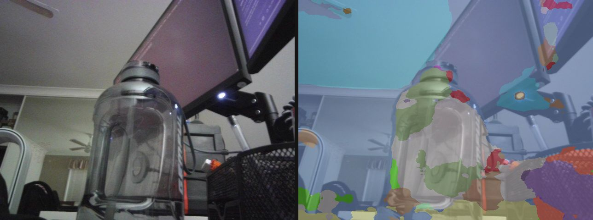

Everything to know about per-pixel labelling: semantic vs instance vs panoptic, how the field got from FCN to encoder-only mask transformers, the mid-2026 model landscape, the metrics (mIoU, Dice, PQ), and runnable code to test the leading open models.
Author
Benedict Thekkel
1. What is Image Segmentation?
Image segmentation assigns a label to every pixel of an image. Where classification gives one label per image and detection gives a box per object, segmentation gives a mask - the exact set of pixels belonging to each thing.
Input. An RGB image, a (H, W, 3) uint8 array. Models resize/pad it to a fixed shorter-edge or square input (512, 640, 1024 are the usual sizes) and normalise with ImageNet mean/std.
Output. Depends on which of the three variants you are running, and this distinction is the single most important thing to get right before picking a model:
Variant
Output
Counts instances?
Covers “stuff”?
Example question it answers
Semantic
one class id per pixel, (H, W) int map
no - two touching cars are one blob
yes (sky, road, grass)
“which pixels are road?”
Instance
a set of binary masks, each with a class + score
yes - car #1, car #2
no (only countable “things”)
“how many cars, and which pixels are each?”
Panoptic
one (H, W) id map + a segments_info list mapping id -> (class, instance)
yes, for things
yes, for stuff
“label every pixel AND separate the objects”
Panoptic segmentation (Kirillov et al., 2018) is the union: every pixel gets exactly one segment id, things (countable: person, car) get one segment per instance, stuff (amorphous: sky, road) gets one segment per class. Non-overlapping by construction, which is why it is the format most modern universal models train on.
A fourth mode has grown up beside these three since 2023: promptable / class-agnostic segmentation, where the model is told where (a click, a box) or what (a noun phrase) and returns masks without a fixed label set. That is SAM’s territory - see 12_Mask_Generation.
Neighbouring tasks:
Task
What it does
Typical tool
Notebook
Object detection
Boxes, not masks - cheaper, coarser
DETR, RT-DETR, YOLO
02_Object_Detection
Mask generation
Promptable, class-agnostic masks
SAM, SAM 2, SAM 3
12_Mask_Generation
Zero-shot detection
Box from a text prompt
OWLv2, Grounding DINO
13_Zero_Shot_Object_Detection
Depth estimation
A different dense per-pixel prediction
Depth Anything, DPT
00_Depth_Estimation
Keypoint detection
Sparse landmarks instead of dense masks
ViTPose, SuperPoint
17_Keypoint_Detection
Image feature extraction
The frozen backbone segmentation heads sit on
DINOv2, DINOv3
16_Image_Feature_Extraction
Detection and segmentation have converged architecturally: a modern instance segmenter is a detector whose queries emit masks instead of boxes. Mask2Former and Mask DINO are the clearest examples.
2. Real-World Use Cases
Segmentation is the workhorse of “the machine has to act on the pixels, not just name them”. The deployments below share almost no model choice.
Use case
Domain
Consumes / produces
Dominant constraint
Drivable-space and lane perception
Autonomous driving (Tesla, Waymo, Mobileye)
Multi-camera video -> per-pixel road/lane/obstacle map, fused into a BEV grid
Latency (<30 ms/frame on an embedded SoC), long-tail robustness, safety validation
Tumour and organ delineation
Medical imaging (radiotherapy planning, MONAI, nnU-Net)
Throughput over petabytes; >3 input channels; class imbalance
Defect inspection
Manufacturing / semiconductor
Line-scan images -> defect masks
Recall on rare defects; few labelled positives; fixed camera makes it easy, drift makes it hard
Video editing / rotoscoping
Media (Adobe, Runway)
Video -> temporally coherent object masks
Interactive latency, mask stability across frames, human-in-the-loop correction
What the ADE20K number hides. A model with 58 mIoU on ADE20K can still be useless to you. First, the class taxonomy is the product decision: ADE20K’s 150 classes and Cityscapes’ 19 do not include your defect, your weed, or your surgical instrument, so the leaderboard tells you about the backbone, not the task - and fine-tuning on 200 in-domain images routinely beats a bigger model zero-shot. Second, the metric hides where the errors are: mIoU averages over classes and is dominated by interiors, so a model can score well while producing ragged boundaries, and boundaries are exactly what matters for matting, radiotherapy margins, and robot grasping. Third, temporal stability is invisible to every image metric - a per-frame segmenter that flickers between two labels looks fine on a still and unusable on video, which is why production video pipelines add memory (SAM 2) or temporal smoothing. Finally the deployment fork mirrors ASR’s streaming-vs-batch: a 3.8M-parameter SegFormer-B0 on an NPU and a 315M EoMT-L on an A100 are not the same product, and no amount of leaderboard reading substitutes for measuring latency on the actual target device with the actual input resolution.
3. How Modern Image Segmentation Works
Seven generations, and the field only recently stopped needing a different architecture per variant.
FCN (2015). Take a classification CNN, replace the fully-connected head with 1x1 convs, upsample the coarse logits back to input size. The first end-to-end dense predictor - and it established the whole “encoder downsamples, decoder upsamples” template. Weakness: 32x-downsampled features give mushy boundaries.
Encoder-decoder with skips: U-Net (2015). Symmetric decoder with skip connections carrying high-resolution detail across from the encoder. Designed for biomedical images with a handful of training samples; still, in 2026, the default for medical and scientific segmentation (nnU-Net is the strongest medical baseline precisely because it auto-configures a U-Net).
Dilated convolutions and context modules (2016-2018). DeepLab replaced downsampling with atrous (dilated) convolution to keep resolution while growing the receptive field, then added ASPP (parallel dilations = multi-scale context) and, in v1/v2, a dense CRF post-process to sharpen boundaries. DeepLabv3+ added a light decoder and dropped the CRF. PSPNet’s pyramid pooling module solved the same context problem with pooling instead of dilation. This generation is the reason “context aggregation” is a segmentation cliche.
Transformers, first wave (2020-2021). SETR showed a plain ViT + naive decoder works. SegFormer (NeurIPS 2021) made it practical: a hierarchical, positional-encoding-free MiT encoder plus a decoder that is nothing but MLPs and one concat - no ASPP, no CRF, no dilation. B0 is 3.8M params at ~37 mIoU on ADE20K; B5 reaches ~51. It remains the best accuracy-per-FLOP option at the small end.
Mask classification, the unification (2021-2023).MaskFormer made the key reframing: stop predicting a class per pixel; instead predict N binary masks, each with one class label (plus a “no object” class), and match them to ground truth with Hungarian matching - the same recipe DETR used for boxes. Mask2Former (CVPR 2022) made it work and made it fast: masked attention (each query’s cross-attention is restricted to its own predicted mask region), multi-scale deformable features, and point-sampled mask losses. Why the unification mattered: semantic, instance and panoptic segmentation stop being three architectures with three losses and become one architecture with three post-processing functions - semantic is “argmax over class-weighted masks”, instance is “keep the thing masks with scores”, panoptic is “resolve overlaps into one id map”. Mask2Former-Swin-L hit 57.8 PQ (COCO panoptic), 50.1 AP (COCO instance) and 57.7 mIoU (ADE20K) with one design. OneFormer (CVPR 2023) went one step further: a single set of weights, conditioned on a task token (“the task is semantic/instance/panoptic”), trained once and doing all three - a Swin-L OneFormer scores 49.8 PQ / 35.9 AP / 57.0 mIoU on ADE20K from the same checkpoint.
Promptable foundation models (2023-2026).SAM (2023) trained on 1.1B masks over 11M images to produce class-agnostic masks from a click or box; SAM 2 (2024) added a memory bank and did the same for video; SAM 3 (late 2025) added concepts - segment every instance matching a noun phrase or image exemplar, in image and video. These do not replace a semantic segmenter (they have no taxonomy of their own) but they are how you get masks without labelled data. See 12_Mask_Generation.
Where mid-2026 actually is: strong backbone, thin head. The 2025-2026 result that reset the field is EoMT (“Your ViT is Secretly an Image Segmentation Model”, CVPR 2025 Highlight): given a large, well-pretrained plain ViT (DINOv2/DINOv3), you can throw away the convolutional adapter, the pixel decoder and the transformer decoder, feed a few learned queries into the last encoder blocks alongside the patch tokens, and get Mask2Former-level accuracy at up to 4x the speed with ViT-L. With a DINOv3 backbone, EoMT-L reaches 59.5 mIoU on ADE20K (512x512) and 58.9 PQ on COCO (1280x1280). The lesson - spend your compute on scaling and pretraining the encoder, not on architectural complexity in the head - is the same lesson NLP learned earlier. The absolute ADE20K record (63.0 mIoU) is a frozen DINOv3 backbone with a Mask2Former head bolted on, which makes the point twice.
Trade-off cheat sheet:
Generation
Accuracy
Speed
Tasks covered
Still use it when
U-Net
good in-domain
fast
binary/semantic
medical, few labels, small data (nnU-Net)
DeepLabv3+ / PSPNet
good
medium
semantic
legacy systems, TF/mobile toolchains
SegFormer
good
fastest per FLOP
semantic
edge, real-time, tiny compute budget
Mask2Former
very good
medium
all 3 (3 checkpoints)
strong universal baseline, mature tooling
OneFormer
very good
slower
all 3 (1 checkpoint)
you need all three tasks from one model
EoMT (+DINOv2/v3)
best open
fast for its accuracy
all 3
the current accuracy/speed sweet spot
SAM / SAM 2 / SAM 3
n/a (class-agnostic)
medium
promptable, open-vocab, video
no labels, interactive tools, video tracking
4. Evaluation Metrics
Pixel accuracy - the fraction of correctly labelled pixels:
where \(n_{ck}\) is the number of pixels of true class \(c\) predicted as \(k\). It lies. On any imbalanced image - and every real image is imbalanced, because sky/road/wall dominate - a model that predicts only the majority class scores near-perfectly. A tumour occupying 1% of a slice gives 99% pixel accuracy to a model that finds nothing. Never report it alone.
Intersection over Union (IoU, Jaccard) per class, and mean IoU over classes - the standard semantic metric:
Averaging over classes (not pixels) is what makes mIoU immune to the imbalance above: a rare class contributes as much as sky. The standard protocol accumulates intersections and unions over the whole dataset and divides once - not per-image mIoU averaged, which weights small images more and blows up on classes absent from an image.
Dice / F1 (the medical convention) is a monotone reparametrisation of IoU, not new information:
Dice is always >= IoU and is gentler on small structures, which is why it (and its differentiable version, the Dice loss) dominates medical segmentation.
Boundary F-score / Trimap IoU. mIoU is dominated by region interiors. If your product is matting, radiotherapy margins, or grasping, evaluate a narrow band around the boundary: the boundary F-score matches predicted and ground-truth contours within a tolerance of a few pixels, and trimap IoU restricts mIoU to a dilated band around edges. Models often rank differently under it.
Instance: mask AP. Exactly detection AP, but IoU is computed between masks instead of boxes: average precision over IoU thresholds 0.50:0.05:0.95, averaged over classes (COCO segm AP).
Panoptic Quality (PQ) - the panoptic metric. Match predicted and ground-truth segments (an IoU > 0.5 match is unique, which is what makes the metric well defined), then:
The factorisation is the useful part: SQ says “when you found a segment, how well did you outline it”, RQ is an F1 over segments and says “did you find the right segments at all”. A model that outlines beautifully but misses half the objects has high SQ and low RQ. PQ is usually also reported split as PQ-Th (things) and PQ-St (stuff).
Speed. Report FPS or ms/image at a stated input resolution and precision - segmentation cost is quadratic in resolution, so a number without a resolution is meaningless. Include post-processing: Mask2Former-style mask assembly is not free.
Two normalisation traps in practice, both of which silently ruin an mIoU:
The ADE20K label shift. ADE20K/SceneParse150 annotation PNGs use 0 = unlabelled and 1..150 = classes, while every model’s id2label runs 0..149 (0 = wall). The HF image processors expose reduce_labels=True, which maps 0 -> 255 (ignored) and subtracts 1 from the rest. Get this wrong and every class is off by one.
Ignore labels. Pixels marked 255 (ignore/void) must be excluded from both intersection and union, not counted as a background class.
The toy cell below computes IoU, Dice and mIoU from scratch, and shows pixel accuracy and mIoU disagreeing violently on an imbalanced example.
import numpy as npIGNORE =255def iou_dice(gt, pred, c):"Per-class IoU and Dice for class id c, ignoring IGNORE pixels." valid = gt != IGNORE g, p = (gt == c) & valid, (pred == c) & valid inter = np.logical_and(g, p).sum() union = np.logical_or(g, p).sum()if union ==0:returnfloat("nan"), float("nan") # class absent from both -> undefined, skip itreturn inter / union, 2* inter / (g.sum() + p.sum())# 4x4 toy: 0 = background, 1 = cat, 2 = remotegt = np.array([[0, 0, 0, 0], [0, 1, 1, 0], [0, 1, 1, 0], [0, 0, 2, 2]])pred = np.array([[0, 0, 0, 0], [0, 1, 0, 0], [0, 1, 1, 0], [0, 0, 0, 2]])ious = []for c in [0, 1, 2]: iou, dice = iou_dice(gt, pred, c) ious.append(iou)print(f"class {c}: IoU {iou:.3f} Dice {dice:.3f} (2*IoU/(1+IoU) = {2* iou / (1+ iou):.3f})")print(f"\nmIoU {np.nanmean(ious):.3f}")print(f"pixel acc {(gt == pred).mean():.3f}")# Why pixel accuracy lies: a "lesion" covering 1% of the image, and a model that# predicts pure background. 99% accurate, and completely worthless.h = w =200gt_imb = np.zeros((h, w), dtype=np.int64)gt_imb[90:110, 90:110] =1# 400 / 40000 px = 1% of the imagepred_lazy = np.zeros_like(gt_imb) # predicts background everywherepred_ok = np.zeros_like(gt_imb)pred_ok[92:112, 92:112] =1# a real, slightly offset predictionfor name, pred_i in [("all-background", pred_lazy), ("offset lesion", pred_ok)]: ious = [iou_dice(gt_imb, pred_i, c)[0] for c in [0, 1]] ious = [i for i in ious ifnot np.isnan(i)]print(f"{name:16s} pixel acc {(gt_imb == pred_i).mean():6.2%} "f"mIoU {np.mean(ious):6.2%} lesion IoU {iou_dice(gt_imb, pred_i, 1)[0]:6.2%}")# The lazy model wins on pixel accuracy (99.00% vs 98.60%) and loses catastrophically# on the only number that matters. Report mIoU (or per-class IoU / Dice), never# pixel accuracy alone.
What this notebook evaluates on.merve/scene_parse_150 - an ungated, parquet-converted mirror of SceneParse150 (the ADE20K 150-class benchmark). The original zhoubolei/scene_parse_150 ships a loading script, which datasets 4.x no longer executes; the parquet mirror loads directly. We slice a handful of validation images - a smoke test, not a leaderboard run.
Gated datasets to plan around: Cityscapes and Mapillary Vistas both need an account and a signed agreement (and Cityscapes’ terms are non-commercial), BraTS needs a research agreement, and SA-1B has its own research license. None of them can be load_dataset-ed anonymously in CI.
6. The Model Landscape (mid-2026)
Model
Params
License
Scope
Architecture
Best for
SegFormer B0-B5
3.8M - 85M
NVIDIA source-code license (non-commercial)
semantic
MiT hierarchical encoder + all-MLP decoder
edge / real-time; B0 is ~37 mIoU ADE20K at 3.8M params
Mask2Former Swin-T/S/B/L
47M - 216M
Meta, “other” (some checkpoints NC)
semantic or instance or panoptic (separate checkpoints)
masked-attention mask classification
the mature universal baseline; Swin-L: 57.8 PQ / 50.1 AP / 57.7 mIoU
OneFormer Swin-T/L, DiNAT-L, ConvNeXt-L
~50M - 220M
MIT
all three from one checkpoint (task token)
task-conditioned mask classification
you need semantic + instance + panoptic and want one model; Swin-L ADE20K: 49.8 PQ / 35.9 AP / 57.0 mIoU
EoMT (DINOv2) S/B/L/g/7B
24M - 7B
MIT (weights)
universal
encoder-only ViT, queries injected into last blocks
Who wins what. On accuracy, a frozen DINOv3 with a Mask2Former head (63.0 mIoU ADE20K) - but it is a research number, not a deployable one. On accuracy at usable speed, EoMT-DINOv3-L: 59.5 mIoU at ~137 FPS (H100, compiled), which is the row that matters for the server-side use cases in section 2. On speed and size, SegFormer-B0 (3.8M params) is still unbeaten for the on-device rows - portrait mode, virtual backgrounds, in-vehicle perception - and no transformer since has displaced it at that scale. On flexibility, OneFormer (three tasks, one checkpoint) and SAM 3 (no taxonomy needed at all).
What does not fit a 12 GB card: EoMT-7B and EoMT-g at 1280x1280, DINOv3-7B backbones, and Mask2Former Swin-L at high resolution during training. Everything with a runnable cell below is <= 315M params and inferences comfortably in fp16.
7. Setup
Every runnable model below loads through Hugging Face transformers - no mmsegmentation, no detectron2, no segment-anything. Package roles:
transformers (>=5.13) + torch - SegFormer, Mask2Former, OneFormer and EoMT (incl. the DINOv3-backboned eomt_dinov3 architecture)
accelerate - device placement for the larger checkpoints
datasets - the ADE20K validation slice with reference annotation maps
pillow + numpy - mask colourisation and alpha-blended overlays (ECharts cannot draw a raster mask; PIL is the right tool)
All downloads (the sample image, the HF dataset and model caches) land in DL_tasks/datasets/, which is gitignored.
# Everything runs through Hugging Face transformers - no vendor segmentation packages.# %pip install -q torch transformers datasets accelerate pillow numpy pandas pyecharts# Optional extra for the webcam demo (section 13)# %pip install -q opencv-python
import ctypesimport ctypes.utilimport gcimport timefrom pathlib import Pathimport torchfrom dotenv import find_dotenv, load_dotenv# Knowledge/.env sets HF_TOKEN - authenticated HF Hub requests get higher rate limitsload_dotenv(find_dotenv(usecwd=True))device ="cuda:0"if torch.cuda.is_available() else"cpu"dtype = torch.float16 if device !="cpu"else torch.float32if device !="cpu":print(torch.cuda.get_device_name(0))print("device:", device)def vram(tag=""):"Report current GPU memory (allocated / reserved). No-op on CPU."if torch.cuda.is_available(): alloc = torch.cuda.memory_allocated() /1e9 reserved = torch.cuda.memory_reserved() /1e9print(f"VRAM {tag:20s}{alloc:5.2f} GB allocated / {reserved:5.2f} GB reserved")def free_memory():"Collect garbage, empty the CUDA cache, and return freed CPU RAM to the OS." gc.collect()if torch.cuda.is_available(): torch.cuda.empty_cache() torch.cuda.ipc_collect()# glibc keeps freed CPU allocations in its arenas instead of returning them# to the OS, so RSS compounds across model sections (cpu-offloaded weights# live in system RAM). malloc_trim(0) hands the freed arenas back. See# dl-visualization-and-memory.instructions.md - not optional on a 12 GB box.try: ctypes.CDLL(ctypes.util.find_library("c") or"libc.so.6").malloc_trim(0)exceptException:pass# All downloads go to DL_tasks/datasets/ (gitignored)DATA_DIR = Path("../../datasets")DATA_DIR.mkdir(exist_ok=True)HF_CACHE =str(DATA_DIR /"hf_cache")
NVIDIA GeForce RTX 3060
device: cuda:0
import urllib.requestimport numpy as npfrom datasets import load_datasetfrom IPython.display import displayfrom PIL import Image# The canonical COCO val2017 sample: two cats on a couch with two remotes.# Good for all three variants - "cat" is a thing (two instances), "couch" is stuff.SAMPLE = DATA_DIR /"coco_cats.jpg"ifnot SAMPLE.exists(): urllib.request.urlretrieve("http://images.cocodataset.org/val2017/000000039769.jpg", SAMPLE )image = Image.open(SAMPLE).convert("RGB")print("sample image:", image.size)# Eval set: an ungated parquet mirror of SceneParse150 (the ADE20K 150-class# benchmark). `annotation` is a PNG label map: 0 = unlabelled, 1..150 = classes.N_EVAL =12eval_ds = load_dataset("merve/scene_parse_150", split=f"validation[:{N_EVAL}]", cache_dir=HF_CACHE,)print(eval_ds)# A fixed, reproducible colour LUT for up to 256 class ids. Index 255 (ignore) is black.rng = np.random.default_rng(0)PALETTE = rng.integers(40, 255, size=(256, 3), dtype=np.uint8)PALETTE[255] =0def colorize(seg):"Map an (H, W) int label map to an RGB PIL image via the LUT." arr = seg.cpu().numpy() if torch.is_tensor(seg) else np.asarray(seg)return Image.fromarray(PALETTE[np.clip(arr.astype(np.int64), 0, 255)])def overlay(img, seg, alpha=0.55):"Alpha-blend a colourised label map over the image (PIL, no matplotlib)." mask = colorize(seg).resize(img.size, Image.NEAREST)return Image.blend(img.convert("RGB"), mask, alpha)def top_classes(seg, id2label, k=6):"The k classes covering the most pixels, as a printable summary." arr = seg.cpu().numpy() if torch.is_tensor(seg) else np.asarray(seg) ids, counts = np.unique(arr, return_counts=True) order = np.argsort(-counts)[:k] total = arr.sizereturn [(id2label.get(int(ids[i]), str(ids[i])), round(100* counts[i] / total, 1))for i in order]
nvidia/segformer-b0-finetuned-ade-512-512 - 3.8M parameters, ADE20K 150 classes. A hierarchical MiT-B0 encoder feeding a decoder that is four MLPs, an upsample and a concat. No positional encodings (so it degrades gracefully at test resolutions it never saw), no ASPP, no CRF. This is still, in 2026, the model you reach for when the budget is an NPU and a 30 ms frame time.
Semantic only - it emits one class per pixel, so the two cats come back as a single cat blob. Note the license: NVIDIA’s source-code license is non-commercial research; check it before shipping.
The image-segmentation pipeline gives you a one-liner (pipeline("image-segmentation", model=..., device=device) -> a list of {"label", "score", "mask"} dicts), but we go through the processor/model directly because the benchmark in section 12 needs the raw (H, W) label map.
from transformers import AutoImageProcessor, AutoModelForSemanticSegmentationseg_id ="nvidia/segformer-b0-finetuned-ade-512-512"seg_proc = AutoImageProcessor.from_pretrained(seg_id, cache_dir=HF_CACHE)seg_model = AutoModelForSemanticSegmentation.from_pretrained( seg_id, dtype=dtype, cache_dir=HF_CACHE).to(device).eval()vram("segformer loaded")inputs = seg_proc(images=image, return_tensors="pt").to(device=device, dtype=dtype)t0 = time.perf_counter()with torch.inference_mode(): outputs = seg_model(**inputs)# logits are 1/4 resolution; post_process upsamples and argmaxes to the original sizeseg_map = seg_proc.post_process_semantic_segmentation( outputs, target_sizes=[image.size[::-1]] # (height, width))[0]print(f"{time.perf_counter() - t0:.2f}s label map {tuple(seg_map.shape)}")print("top classes:", top_classes(seg_map, seg_model.config.id2label))display(overlay(image, seg_map))del seg_model, seg_proc, inputs, outputsfree_memory()vram("after segformer")
VRAM after segformer 0.01 GB allocated / 0.02 GB reserved
9. Mask2Former (instance and panoptic)
facebook/mask2former-swin-tiny-coco-instance and facebook/mask2former-swin-tiny-coco-panoptic - 47M params each, COCO’s 80 things / 133 panoptic classes.
Mask2Former predicts 100 queries, each producing a binary mask plus a class distribution (including “no object”). What changes between the three tasks is not the network but the post-processing: post_process_instance_segmentation keeps confident thing-masks with scores, post_process_panoptic_segmentation resolves query overlaps into a single non-overlapping id map plus segments_info, and post_process_semantic_segmentation contracts the queries into a per-pixel argmax. Same weights, three views - that is the mask-classification idea from section 3 made concrete.
Watch the instance output separate the two cats into two masks; the semantic view could not.
from transformers import AutoModelForUniversalSegmentation# --- instance segmentation: countable "things", one mask + score each ---m2f_id ="facebook/mask2former-swin-tiny-coco-instance"m2f_proc = AutoImageProcessor.from_pretrained(m2f_id, cache_dir=HF_CACHE)m2f = AutoModelForUniversalSegmentation.from_pretrained( m2f_id, dtype=dtype, cache_dir=HF_CACHE).to(device).eval()inputs = m2f_proc(images=image, return_tensors="pt").to(device=device, dtype=dtype)t0 = time.perf_counter()with torch.inference_mode(): out = m2f(**inputs)inst = m2f_proc.post_process_instance_segmentation( out, target_sizes=[image.size[::-1]], threshold=0.8)[0]print(f"instance {time.perf_counter() - t0:.2f}s")for s in inst["segments_info"]:print(f" id={s['id']:2d}{m2f.config.id2label[s['label_id']]:12s} score={s['score']:.2f}")display(overlay(image, inst["segmentation"]))del m2f, m2f_proc, inputs, outfree_memory()
[transformers] Mask2FormerForUniversalSegmentation LOAD REPORT from: facebook/mask2former-swin-tiny-coco-instance
Key | Status |
-----------------------------------------------------------------------------------------------------------------------------------+------------+-
model.pixel_level_module.encoder.swin.encoder.layers.{0, 1, 2, 3}.blocks.{0, 1, 2, 3, 4, 5}.attention.self.relative_position_index | UNEXPECTED |
model.pixel_level_module.encoder.swin.layernorm.weight | MISSING |
model.pixel_level_module.encoder.swin.layernorm.bias | MISSING |
Notes:
- UNEXPECTED: can be ignored when loading from different task/architecture; not ok if you expect identical arch.
- MISSING: those params were newly initialized because missing from the checkpoint. Consider training on your downstream task.
# --- panoptic segmentation: things AND stuff, one id per pixel ---pan_id ="facebook/mask2former-swin-tiny-coco-panoptic"pan_proc = AutoImageProcessor.from_pretrained(pan_id, cache_dir=HF_CACHE)pan_model = AutoModelForUniversalSegmentation.from_pretrained( pan_id, dtype=dtype, cache_dir=HF_CACHE).to(device).eval()inputs = pan_proc(images=image, return_tensors="pt").to(device=device, dtype=dtype)t0 = time.perf_counter()with torch.inference_mode(): out = pan_model(**inputs)pan = pan_proc.post_process_panoptic_segmentation( out, target_sizes=[image.size[::-1]])[0]print(f"panoptic {time.perf_counter() - t0:.2f}s "f"{len(pan['segments_info'])} segments, ids are unique per instance")for s in pan["segments_info"]:print(f" id={s['id']:2d}{pan_model.config.id2label[s['label_id']]:14s} "f"score={s['score']:.2f}")display(overlay(image, pan["segmentation"]))del pan_model, pan_proc, inputs, outfree_memory()vram("after mask2former")
[transformers] Mask2FormerForUniversalSegmentation LOAD REPORT from: facebook/mask2former-swin-tiny-coco-panoptic
Key | Status |
-----------------------------------------------------------------------------------------------------------------------------------+------------+-
model.pixel_level_module.encoder.swin.encoder.layers.{0, 1, 2, 3}.blocks.{0, 1, 2, 3, 4, 5}.attention.self.relative_position_index | UNEXPECTED |
model.pixel_level_module.encoder.swin.layernorm.weight | MISSING |
model.pixel_level_module.encoder.swin.layernorm.bias | MISSING |
Notes:
- UNEXPECTED: can be ignored when loading from different task/architecture; not ok if you expect identical arch.
- MISSING: those params were newly initialized because missing from the checkpoint. Consider training on your downstream task.
[transformers] `label_ids_to_fuse` unset. No instance will be fused.
VRAM after mask2former 0.01 GB allocated / 0.06 GB reserved
10. OneFormer (one checkpoint, all three tasks)
shi-labs/oneformer_ade20k_swin_tiny (MIT) - trained once on ADE20K’s panoptic annotations, then conditioned at inference by a task token: you pass task_inputs=["semantic"], ["instance"] or ["panoptic"] and the same weights behave like three different models. A text encoder aligns query embeddings with class-name text during training, which is what lets the task token steer the queries at all.
Pick it when you genuinely need all three outputs (an annotation tool, a dataset-labelling pipeline) and do not want to ship and version three checkpoints. It is slower than a Mask2Former of the same backbone - the task conditioning is not free - and the accuracy edge only shows up at Swin-L scale (49.8 PQ / 35.9 AP / 57.0 mIoU on ADE20K).
from transformers import OneFormerForUniversalSegmentation, OneFormerProcessorone_id ="shi-labs/oneformer_ade20k_swin_tiny"one_proc = OneFormerProcessor.from_pretrained(one_id, cache_dir=HF_CACHE)one_model = OneFormerForUniversalSegmentation.from_pretrained( one_id, dtype=dtype, cache_dir=HF_CACHE).to(device).eval()vram("oneformer loaded")post = {"semantic": one_proc.post_process_semantic_segmentation,"instance": one_proc.post_process_instance_segmentation,"panoptic": one_proc.post_process_panoptic_segmentation,}panels = {}for task, fn in post.items(): inputs = one_proc(images=image, task_inputs=[task], return_tensors="pt").to( device=device, dtype=dtype ) t0 = time.perf_counter()with torch.inference_mode(): out = one_model(**inputs) res = fn(out, target_sizes=[image.size[::-1]])[0] seg = res if torch.is_tensor(res) else res["segmentation"] panels[task] = seg n ="-"if torch.is_tensor(res) elselen(res["segments_info"])print(f"{task:9s}{time.perf_counter() - t0:5.2f}s segments={n} "f"top={top_classes(seg, one_model.config.id2label, k=3)}")# Same weights, three outputs. Stack them side by side.strip = Image.new("RGB", (image.width *3, image.height))for i, task inenumerate(["semantic", "instance", "panoptic"]): strip.paste(overlay(image, panels[task]), (i * image.width, 0))display(strip)del one_model, one_proc, inputs, out, panels, stripfree_memory()vram("after oneformer")
[transformers] OneFormerForUniversalSegmentation LOAD REPORT from: shi-labs/oneformer_ade20k_swin_tiny
Key | Status |
-----------------------------------------------------------------------------------------------------------------------------------+------------+-
model.pixel_level_module.encoder.swin.encoder.layers.{0, 1, 2, 3}.blocks.{0, 1, 2, 3, 4, 5}.attention.self.relative_position_index | UNEXPECTED |
model.pixel_level_module.encoder.swin.layernorm.weight | MISSING |
model.pixel_level_module.encoder.swin.layernorm.bias | MISSING |
Notes:
- UNEXPECTED: can be ignored when loading from different task/architecture; not ok if you expect identical arch.
- MISSING: those params were newly initialized because missing from the checkpoint. Consider training on your downstream task.
VRAM after oneformer 0.03 GB allocated / 0.10 GB reserved
11. EoMT-DINOv3 (the mid-2026 sweet spot)
tue-mps/eomt-dinov3-ade-semantic-large-512 - 315M params, MIT, ADE20K semantic. This is the CVPR 2025 Highlight result made practical: a plain DINOv3-pretrained ViT-L with no adapter, no pixel decoder, no transformer decoder. A handful of learned queries are simply concatenated to the patch tokens in the last few encoder blocks, masked attention is annealed away during training, and the model outputs mask + class logits from the encoder itself.
It reaches 59.5 mIoU on ADE20K - about 3 points above Mask2Former-Swin-L - while being roughly 4x faster than a Mask2Former of comparable accuracy, because it is just a ViT forward pass. It is transformers-native as the eomt_dinov3 architecture (AutoModelForUniversalSegmentation picks it up automatically); the DINOv2-backboned family (tue-mps/ade20k_semantic_eomt_large_512, tue-mps/coco_panoptic_eomt_large_640) is loaded exactly the same way.
315M params in fp16 is ~0.7 GB - the largest model in this notebook and still comfortable on a 12 GB card. The -small and -base COCO-panoptic variants (24M / 86M) exist if you need it smaller.
VRAM after eomt 0.03 GB allocated / 0.13 GB reserved
12. Head-to-head Benchmark
Five ADE20K-150 semantic models, the same 12 validation images, the same label convention, one loaded at a time. We report:
mIoU accumulated over the whole slice (intersections and unions summed across images, divided once - the standard protocol from section 4), averaged over the classes that actually appear.
pixel accuracy, purely to watch it fail to discriminate.
ms/image, forward pass + post-processing, fp16 on GPU.
The label shift, handled. SceneParse150 annotations use 0 = unlabelled, 1..150 = classes; the models use 0..149. We subtract 1 and send 0 to the ignore id, which is exactly what reduce_labels=True does inside the image processors at training time. Ignored pixels are excluded from both intersection and union.
Caveat. Twelve images is a smoke test, not a leaderboard - the class-averaged mIoU over 12 images is noisy, and rare classes appear once or not at all. Published ADE20K numbers use all 2,000 validation images, often at multiple scales with flipping. Expect these numbers to land below the published ones and to rank roughly, not exactly, the same.
def gt_labels(ann):"SceneParse150 annotation PNG -> model label ids (0..149), 255 = ignore." a = np.array(ann)if a.ndim ==3: # some mirrors store the label map as RGB a = a[..., 0] a = a.astype(np.int32) -1 a[a <0] = IGNORE # annotation 0 (unlabelled) -> ignorereturn adef load_semantic(model_id, family):"Load a processor + model for semantic segmentation, in fp16 on GPU."if family =="segformer": proc = AutoImageProcessor.from_pretrained(model_id, cache_dir=HF_CACHE) model = AutoModelForSemanticSegmentation.from_pretrained( model_id, dtype=dtype, cache_dir=HF_CACHE)elif family =="oneformer": proc = OneFormerProcessor.from_pretrained(model_id, cache_dir=HF_CACHE) model = OneFormerForUniversalSegmentation.from_pretrained( model_id, dtype=dtype, cache_dir=HF_CACHE)else: # mask2former, eomt - both are "universal" mask-classification models proc = AutoImageProcessor.from_pretrained(model_id, cache_dir=HF_CACHE) model = AutoModelForUniversalSegmentation.from_pretrained( model_id, dtype=dtype, cache_dir=HF_CACHE)return proc, model.to(device).eval()def predict(proc, model, family, img):"Run one image -> (H, W) int32 label map at the original resolution." kwargs = {"images": img, "return_tensors": "pt"}if family =="oneformer": kwargs["task_inputs"] = ["semantic"] inputs = proc(**kwargs).to(device=device, dtype=dtype)with torch.inference_mode(): out = model(**inputs) seg = proc.post_process_semantic_segmentation(out, target_sizes=[img.size[::-1]])[0]return seg.cpu().numpy().astype(np.int32)def evaluate(model_id, family, n_classes=150):"mIoU + pixel accuracy + ms/image over the eval slice." proc, model = load_semantic(model_id, family) inter = np.zeros(n_classes, dtype=np.int64) union = np.zeros(n_classes, dtype=np.int64) correct = total =0 t0 = time.perf_counter()for row in eval_ds: img = row["image"].convert("RGB") gt = gt_labels(row["annotation"]) pred = predict(proc, model, family, img) valid = gt != IGNORE g, p = gt[valid], pred[valid] correct +=int((g == p).sum()) total +=int(valid.sum())for c in np.union1d(np.unique(g), np.unique(p)):if0<= c < n_classes: inter[c] +=int(((g == c) & (p == c)).sum()) union[c] +=int(((g == c) | (p == c)).sum()) elapsed = time.perf_counter() - t0 seen = union >0# only average over classes that appear in the GT or the prediction miou =float(np.mean(inter[seen] / union[seen])) acc = correct / total ms =1000* elapsed /len(eval_ds)del model, proc free_memory()print(f"{model_id:48s} mIoU {miou:6.2%} pixAcc {acc:6.2%}{ms:6.0f} ms/img")return {"model": model_id.split("/")[-1], "miou": miou, "pixacc": acc, "ms": ms}
MODELS = [ ("nvidia/segformer-b0-finetuned-ade-512-512", "segformer"), ("nvidia/segformer-b2-finetuned-ade-512-512", "segformer"), ("facebook/mask2former-swin-tiny-ade-semantic", "mask2former"), ("shi-labs/oneformer_ade20k_swin_tiny", "oneformer"), ("tue-mps/eomt-dinov3-ade-semantic-large-512", "eomt"),]results = [evaluate(mid, fam) for mid, fam in MODELS] # one model live at a timevram("after benchmark")
[transformers] Mask2FormerForUniversalSegmentation LOAD REPORT from: facebook/mask2former-swin-tiny-ade-semantic
Key | Status |
-----------------------------------------------------------------------------------------------------------------------------------+------------+-
model.pixel_level_module.encoder.swin.encoder.layers.{0, 1, 2, 3}.blocks.{0, 1, 2, 3, 4, 5}.attention.self.relative_position_index | UNEXPECTED |
model.pixel_level_module.encoder.swin.layernorm.weight | MISSING |
model.pixel_level_module.encoder.swin.layernorm.bias | MISSING |
Notes:
- UNEXPECTED: can be ignored when loading from different task/architecture; not ok if you expect identical arch.
- MISSING: those params were newly initialized because missing from the checkpoint. Consider training on your downstream task.
[transformers] OneFormerForUniversalSegmentation LOAD REPORT from: shi-labs/oneformer_ade20k_swin_tiny
Key | Status |
-----------------------------------------------------------------------------------------------------------------------------------+------------+-
model.pixel_level_module.encoder.swin.encoder.layers.{0, 1, 2, 3}.blocks.{0, 1, 2, 3, 4, 5}.attention.self.relative_position_index | UNEXPECTED |
model.pixel_level_module.encoder.swin.layernorm.weight | MISSING |
model.pixel_level_module.encoder.swin.layernorm.bias | MISSING |
Notes:
- UNEXPECTED: can be ignored when loading from different task/architecture; not ok if you expect identical arch.
- MISSING: those params were newly initialized because missing from the checkpoint. Consider training on your downstream task.
from pyecharts import options as optsfrom pyecharts.charts import Barnames = [r["model"] for r in results]bar = ( Bar() .add_xaxis(names) .add_yaxis("mIoU %", [round(100* r["miou"], 1) for r in results]) .add_yaxis("pixel acc %", [round(100* r["pixacc"], 1) for r in results]) .set_global_opts( title_opts=opts.TitleOpts( title="ADE20K semantic segmentation", subtitle=f"{len(eval_ds)} val images, fp16, {device} - smoke test, not a leaderboard", ), xaxis_opts=opts.AxisOpts(axislabel_opts=opts.LabelOpts(rotate=25, font_size=9)), yaxis_opts=opts.AxisOpts(name="%"), tooltip_opts=opts.TooltipOpts(trigger="axis"), legend_opts=opts.LegendOpts(pos_right="5%"), ))# The gap between the two bars is section 4's point: pixel accuracy barely moves# across models that differ by 20 points of mIoU.bar.render_notebook()
from pyecharts.charts import Scatter# Accuracy vs speed: the only chart that should drive a production model choice.scatter = Scatter().add_xaxis([round(r["ms"]) for r in results])for i, r inenumerate(results): ys = [None] *len(results) ys[i] =round(100* r["miou"], 1) scatter.add_yaxis( r["model"], ys, symbol_size=18, label_opts=opts.LabelOpts(is_show=False) )scatter.set_global_opts( title_opts=opts.TitleOpts(title="mIoU vs latency", subtitle=f"fp16, {device}"), xaxis_opts=opts.AxisOpts(name="ms / image", type_="value"), yaxis_opts=opts.AxisOpts(name="mIoU %", type_="value", min_="dataMin"), tooltip_opts=opts.TooltipOpts(formatter="{a}: {c} "), legend_opts=opts.LegendOpts(pos_top="8%", orient="vertical", pos_left="60%"),)scatter.render_notebook()
13. Real-time Webcam Demo
Segmentation is one of the few dense-prediction tasks that is genuinely real-time on modest hardware: SegFormer-B0 at 512x512 runs at tens of FPS on a 3060 and is what powers on-device background replacement.
Streamed live, the weakness is obvious in a way a single frame never shows: the mask flickers, with pixels near a boundary swapping class between consecutive frames because nothing here carries temporal state. Production video pipelines fix exactly this, either with temporal memory (SAM 2) or an EMA over the logits.
The view is live: the left pane is the raw camera, the right pane is the same frame after the model, and both update in place through a display handle - no cv2.imshow, no GUI, so it works over JupyterLab against a headless container. A status line underneath carries the running FPS and the per-frame numbers. It runs for STREAM_SECONDS seconds; interrupt the kernel to stop it early.
Two things throttle the frame rate before the model does, both measured on this machine: auto-exposure drops the sensor to 15 FPS in a dim room (take exposure off auto to pin 30), and setting CAP_PROP_BUFFERSIZEhalves the delivered rate on the V4L2 backend, so the helper deliberately does not set it.
Needs a real camera at /dev/video0 - the cell raises rather than substituting stand-in images. The docs builder never runs it (skip_exec: true).
# opencv-python-headless is a project dependency; the headless build captures from# V4L2 fine, it only drops the GUI windows.import ioimport timeimport cv2import numpy as npimport torchfrom IPython.display import Image as IPyImagefrom IPython.display import Pretty, displayfrom PIL import Image, ImageDraw, ImageFontCAM =0# /dev/video0WARMUP =10# throwaway reads - auto-exposure and white balance need to settleSTREAM_SECONDS =15# how long a live demo runs; interrupt the kernel to stop earlydef bootstrap(*names, notebook, sections):"""Make this demo runnable on a cold kernel, without duplicating the notebook. The demo builds on the notebook's setup and helper cells. Instead of making you run them by hand - or copying them in here and letting the copies drift - this reads the notebook file and executes those sections itself, and only when a name is actually missing. Run the notebook top to bottom and it does nothing at all. It stops as soon as every required name exists, so trailing benchmark cells in a section are not run. """ifall(n inglobals() for n in names):returnimport jsonfrom pathlib import Pathfrom IPython.utils.capture import capture_output path = Path(notebook)ifnot path.exists():raiseNameError(f"this demo needs {', '.join(n for n in names if n notinglobals())}, and cannot "f"find {notebook} to bootstrap from (cwd is {Path.cwd()}, expected the notebook's "f"own directory). Run section(s) {'; '.join(sections)} by hand instead." )print(f"cold start: running {'; '.join(sections)} from {notebook} (output suppressed)") heading =Nonefor cell in json.loads(path.read_text())["cells"]: src ="".join(cell["source"])if cell["cell_type"] =="markdown"and src.lstrip().startswith("## "): heading = src.lstrip().splitlines()[0][3:].strip()continueif cell["cell_type"] !="code"ornot heading or"def bootstrap("in src:continueifnotany(heading.startswith(s) for s in sections):continue code ="".join(""if l.lstrip().startswith(("%", "!")) else lfor l in src.splitlines(keepends=True))# The setup cells print tables and display sample images. This demo only# wants the live stream, so swallow their output - errors still propagate.with capture_output():exec(compile(code, f"{notebook} [{heading}]", "exec"), globals())ifall(n inglobals() for n in names):break still = [n for n in names if n notinglobals()]if still:raiseNameError(f"bootstrapped {'; '.join(sections)} but {', '.join(still)} ""are still undefined - the notebook layout may have changed.")def open_camera(index=CAM, width=640, height=480, auto_exposure=True, exposure=150):"Open a V4L2 webcam in MJPEG mode, let it settle, and return the capture handle." cap = cv2.VideoCapture(index, cv2.CAP_V4L2)ifnot cap.isOpened():raiseRuntimeError(f"/dev/video{index} did not open - no camera attached, ""or it is not passed through into this container" ) cap.set(cv2.CAP_PROP_FOURCC, cv2.VideoWriter.fourcc(*"MJPG")) # MJPEG unlocks the higher modes cap.set(cv2.CAP_PROP_FRAME_WIDTH, width) cap.set(cv2.CAP_PROP_FRAME_HEIGHT, height)# UVC exposure is DEVICE state and persists between processes: if anything left# this camera in manual mode, every frame comes back dark and never adapts# (measured here: mean 13/255 stuck, vs 109/255 on auto). So ask for the mode# explicitly instead of inheriting whatever the last program set.# auto (3): correct brightness, but a dim room throttles the sensor to 15 FPS# manual (1): locked 30 FPS, at whatever `exposure` level suits your lighting cap.set(cv2.CAP_PROP_AUTO_EXPOSURE, 3if auto_exposure else1)ifnot auto_exposure: cap.set(cv2.CAP_PROP_EXPOSURE, exposure)# Deliberately no CAP_PROP_BUFFERSIZE: on the V4L2 backend it HALVES the# delivered frame rate (measured here: 67 -> 134 ms per read) and does not make# frames any fresher.for _ inrange(WARMUP):ifnot cap.read()[0]: cap.release()raiseRuntimeError(f"/dev/video{index} opened but delivered no frames")return capdef grab(cap):"Read one frame off an open camera as an RGB PIL image (OpenCV hands back BGR)." ok, frame = cap.read()ifnot ok:raiseRuntimeError("failed to read a frame")return Image.fromarray(cv2.cvtColor(frame, cv2.COLOR_BGR2RGB))def capture_frame(**kw):"Open the camera, grab one settled frame, and release the device." cap = open_camera(**kw)try:return grab(cap)finally: cap.release()_FONT = ImageFont.load_default(size=15)def draw_lines(img, lines, pad=6):"Burn a few lines of text into a band across the top of a copy of `img`." out = img.convert("RGB").copy() d = ImageDraw.Draw(out) d.rectangle([0, 0, out.width, 18*len(lines) +2* pad], fill=(0, 0, 0))for i, line inenumerate(lines): d.text((pad, pad +18* i), line, fill=(255, 255, 255), font=_FONT)return outdef pair_view(left, right, gap=8):"Raw frame and annotated frame side by side on one canvas - the live view." right = right.convert("RGB")if right.size != left.size: right = right.resize(left.size) canvas = Image.new("RGB", (left.width *2+ gap, left.height), (20, 20, 20)) canvas.paste(left.convert("RGB"), (0, 0)) canvas.paste(right, (left.width + gap, 0))return canvasdef _jpeg(img, quality=80):"Encode a PIL image to JPEG bytes - what actually goes over the wire each frame." buf = io.BytesIO() img.convert("RGB").save(buf, format="JPEG", quality=quality)return buf.getvalue()def live_stream(annotate, seconds=STREAM_SECONDS, width=640, height=480):"""Stream `raw | annotated` into the notebook output until `seconds` elapse. `annotate(rgb)` returns `(annotated_image, info_string)`. The image and the status line each own a display handle and update in place, so this needs no GUI and no `cv2.imshow` - it works over JupyterLab against a headless container. Interrupt the kernel (the stop button) to end early; the camera is still released. """ cap = open_camera(width=width, height=height) view = status =None# created from the FIRST real frame, so no placeholder flashes up n, t0 =0, time.perf_counter()try:while time.perf_counter() - t0 < seconds: rgb = grab(cap) annotated, info = annotate(rgb) n +=1 frame = IPyImage(data=_jpeg(pair_view(rgb, annotated))) line = Pretty(f"frame {n:4d}{n / (time.perf_counter() - t0):5.1f} FPS {info}")if view isNone: view = display(frame, display_id=True) status = display(line, display_id=True)else: view.update(frame) status.update(line)exceptKeyboardInterrupt:if status isnotNone: status.update(Pretty(f"stopped at frame {n}"))finally: cap.release() # always hand the device back elapsed = time.perf_counter() - t0print(f"{n} frames in {elapsed:.1f}s -> {n /max(elapsed, 1e-9):.1f} FPS end-to-end ""(camera + model + JPEG encode)")def preview(seconds=5, width=640, height=480):"Stream the raw camera so you can frame the shot, then return the final frame." cap = open_camera(width=width, height=height) view = status =None# created from the FIRST real frame, so no placeholder flashes up last, n, t0 =None, 0, time.perf_counter()try:while time.perf_counter() - t0 < seconds: last = grab(cap) n +=1 frame = IPyImage(data=_jpeg(last)) line = Pretty(f"framing - {seconds - (time.perf_counter() - t0):4.1f}s left, "f"{n} frames (the last one is the one that gets used)")if view isNone: view = display(frame, display_id=True) status = display(line, display_id=True)else: view.update(frame) status.update(line)exceptKeyboardInterrupt:passfinally: cap.release()if status isnotNone: status.update(Pretty(f"captured the last of {n} frames"))return last# load_semantic (section 12) resolves these at call time; importing them here# means sections 8-10 do not have to be run just for their import lines.from transformers import (AutoImageProcessor, AutoModelForSemanticSegmentation, AutoModelForUniversalSegmentation, OneFormerForUniversalSegmentation, OneFormerProcessor)# Everything below builds on the notebook's setup and helper cells.bootstrap("load_semantic", "predict", "overlay", "free_memory", "vram", notebook="03_Image_Segmentation.ipynb", sections=["4. Evaluation Metrics", "7. Setup", "12. Head-to-head Benchmark"])cam_proc, cam_model = load_semantic("nvidia/segformer-b0-finetuned-ade-512-512","segformer")def annotate(rgb):"One frame -> (mask overlaid on the frame, the classes covering the most pixels)." seg = predict(cam_proc, cam_model, "segformer", rgb) arr = seg.cpu().numpy() if torch.is_tensor(seg) else np.asarray(seg) ids, counts = np.unique(arr, return_counts=True) order = np.argsort(-counts)[:3] top =", ".join(f"{cam_model.config.id2label[int(ids[i])]}{counts[i] / arr.size:.0%}"for i in order)return overlay(rgb, seg), toptry: live_stream(annotate)finally:del cam_proc, cam_model free_memory() vram("final")

frame 220 14.7 FPS wall 46%, ceiling 20%, car 12%
220 frames in 15.0s -> 14.7 FPS end-to-end (camera + model + JPEG encode)
VRAM final 0.01 GB allocated / 0.02 GB reserved
14. Common Frameworks
Segmentation splits by domain more sharply than by architecture. Natural-image work runs on the transformers stack; medical and volumetric work has an entirely separate ecosystem built around nnU-Net and MONAI that shares almost no code with it, and starting a CT project from an ADE20K checkpoint is a well-known way to waste a month. The annotation layer matters more here than anywhere else in this folder, because pixel labels are the most expensive labels there are.
mIoU, Dice, and PQ/SQ/RQ; for medical work, Dice plus HD95 rather than mIoU alone
Apache 2.0 / MIT
Always. The three sub-tasks have three different metrics, and reporting the wrong one is the most common error in segmentation papers
The 2026 default stack for natural images is a transformers SegFormer or EoMT fine-tuned on a few hundred in-domain masks, bootstrapped with SAM 2 pre-labelling in CVAT, augmented with albumentations, exported to ONNX. For medical images it is nnU-Net, and almost nothing above transfers.
The common wrong turn is reaching for a bigger foundation model instead of labelling. A small SegFormer fine-tuned on your taxonomy beats every zero-shot model on your taxonomy, and SAM makes the labelling cheap enough that this is nearly always the right trade. The second is scoring medical segmentation with mIoU, which is insensitive to exactly the boundary errors that matter clinically.
15. Going Further
Fine-tuning. This is the highest-leverage move in segmentation: a SegFormer or Mask2Former fine-tuned on a few hundred in-domain masks beats any zero-shot foundation model on your taxonomy. Start from the HF guides (semantic segmentation, universal / Mask2Former); label with Label Studio or CVAT, and use SAM to pre-fill the masks so annotators only correct them.
Get labels for free. Prompt SAM 2 / SAM 3 (or CLIPSeg for a text-prompted binary mask) to bootstrap a training set, then distil into a small SegFormer for deployment. See 12_Mask_Generation and 13_Zero_Shot_Object_Detection.
Medical / 3-D. Do not start from ADE20K models. nnU-Net auto-configures a U-Net from your dataset fingerprint and is still the baseline to beat; MONAI is the ecosystem. Score with Dice + HD95, never mIoU alone.
Video.18_Video_to_Video and SAM 2’s memory bank for mask propagation; VidEoMT (CVPR 2026) extends the encoder-only idea to video and claims ~10x over competitors.
What to read next in this directory:02_Object_Detection (boxes, and the DETR lineage that mask classification inherits), 12_Mask_Generation (SAM), 16_Image_Feature_Extraction (DINOv3 - the backbone under the best segmenters), 00_Depth_Estimation (the other dense prediction task).